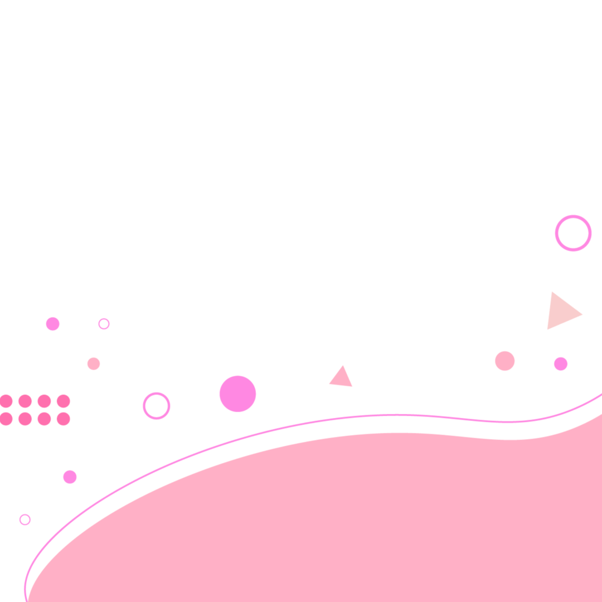
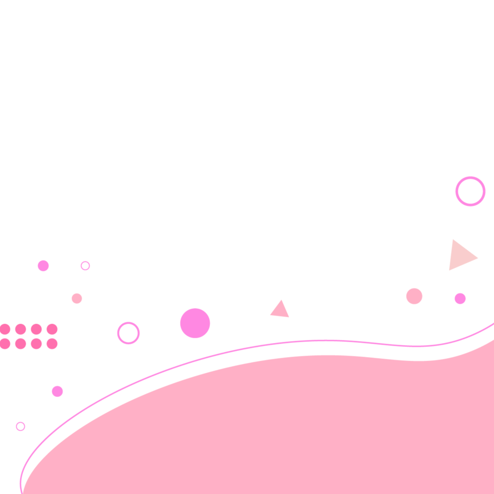
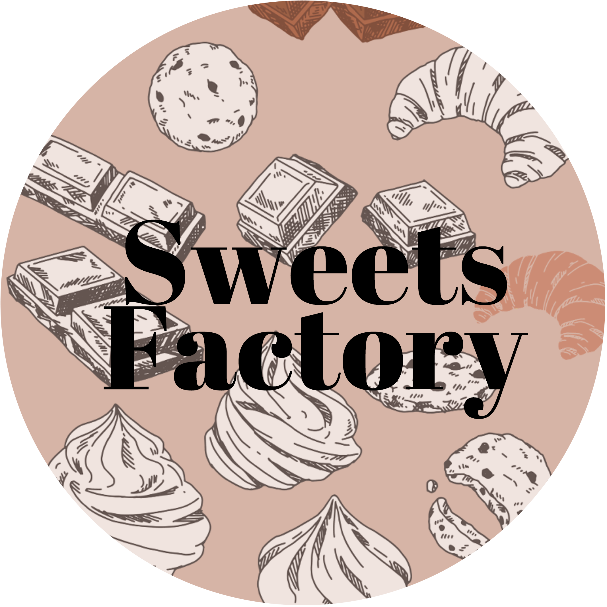
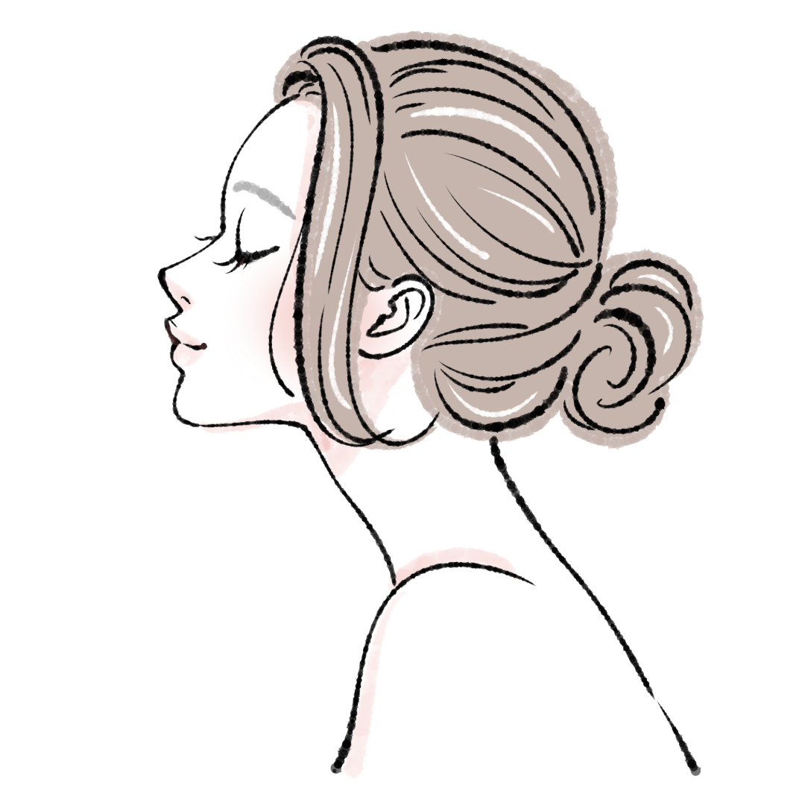

初めまして。当サイトをご覧いただき、
ありがとうございます。
Mizuho.codeと申します。
30代でweb業界への道を目指して
日々奮闘しております。
このサイトはそんな私のことを
知ってもらいたくて作成しました。

お菓子の工場で12年
機械の整備、オペレーター
事務職
出荷作業(フォークリフト免許取得)
様々な仕事をさせていただきました。事務職に関しては労務管理課に所属し、
社会保険や給与計算、年末調整などを学びました。
カフェキッチンスタッフ1年
食事や飲み物の提供
新メニューの開発
メニュー表やオーダー表の作成(Excel)
お客様に楽しんでいただけるように、丁寧な盛り付けを心がけ、
できる限り素早く提供できるように効率よ作業することを一番に考えながら
作業していました。
クリーニング店の受付スタッフ6ヶ月
CAA(クリーニングアシスタントアドバイザー)資格取得
自社接客勉強会にて接客を学ぶ
接客の大切さを学びました。短い期間の中で、クリーニングの基礎知識、
言葉遣いの重要性を身につけることができました。おすすめしたオプションを
お客様につけていただけたり、喜んでくださる姿がとても嬉しく思いました。

なりたい自分。
web業界を目指そうと思ったきっかけ
初めてこの業界に興味を持ったのは私が高校生の頃のことでした。
実は好きなコスプレイヤーさんが出した「コスプレROM」を見て
衝撃を受けたことがきっかけだったんです。
可愛い装飾が施され、キャラクターにあった色合いや写真の配置、
いろんなアニメーションで動く文字や写真。こんなことができるなんて
すごいと思っていました。
ですが、この頃は特に自分で作ってみようなんて考えてはいませんでした。
そこから14年経って変わったことは
いろんな職業で働き、たくさんの人と交流をする中で、やっぱり自分でも
サイトを作ってみたいなと思うようになっていきました。
最初はエンジニアの友人に相談しながら本を参考にサイトを作りました。
そしてすごく楽しいと思ったんです。コードを入力すると反映されることが
不思議で、面白かったです。
一旦はサイトを作って満足して、仕事にしようとまでは思いませんでしたが、
友人の後押しと、職業訓練校の存在を知ったことで、これが最後のチャンスと
思い切ってweb制作業界へ一歩踏み出したのです。
とにかく動いていたい性格
今まで働いてみて気づいたことはとにかく何かしら動いていたい性格だ
ということです。
「暇な時間」よりも「忙しくて大変」な作業を
好む傾向にありました。
そして、接客業を始めてからは実際にお客様とお話ししていく中で
やりがいを強く感じるようになっていきました。
経験や趣味、スキルを活かして
- 接客業で培ったスキルと人見知りをしない明るい性格
- 趣味の写真撮影技術
きっとこのスキルはweb制作においても役立つと自負しています。
いつかwebディレクターになれるように勉強したり、
経験を積んでいきたいと考えています。
制作したWebページを掲載していきますが、現在はまだ作品はありません。
最後までご覧いただき、ありがとうございました。